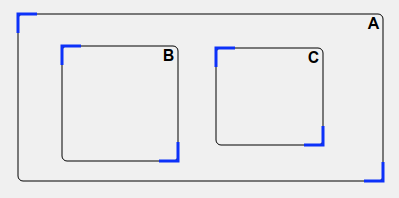
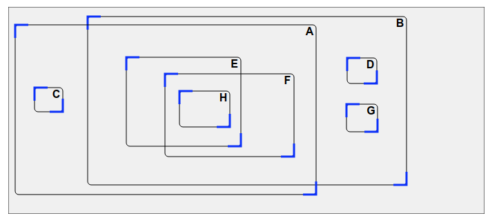

الحل
ضع المستطيلات B و C في المستطيل A .

ملاحظة: يجب تجنب وضع B بالكامل في C ،أو وضع C بالكامل في B .
في المستطيل A ، ضع المستطيلات B و C . ثم في المستطيل B ، يجب عليك وضع D و E . بالإضافة إلى ذلك ، في المستطيل F ، يجب وضع G .

ملاحظة: يمكننا أيضًا رؤية المشكلة في الاتجاه المعاكس. من ناحية ، يجب وضع المستطيل G في F . من ناحية أخرى ، يجب وضع المستطيلات D و E في B ، ثم ضع المستطيلات B و C في A .
يسهل وضع المستطيل C في النهاية: ضعه في المستطيل A ، بعيدًا عن المستطيلات الأخرى. الأمر نفسه ينطبق على المستطيلات D و G ، والتي يمكن وضعها في النهاية في المستطيل B ، بعيدًا المستطيلات الأخرى.
لذلك دعونا نركز على المستطيلات A و B و E و F و H . يجب أن يكون المستطيلان E و F في A و B . لذلك من الضروري وجود منطقة متداخلة بين هذه المستطيلات ، وأن E و F يوضعان في هذه المنطقة المشتركة.

ثم ضع المستطيل H ، والذي يجب أن يكون في كل من E و F . لهذا يفرض علينا ضبط E و F لإنشاء مساحة متداخلة بينهما ، من أجل وضع H في هذه المنطقة المشتركة.

ننتهي بوضع المستطيلات C و D و G ، كما هو موضح في البداية.

ملاحظة: لاحظ أنه يجب تجنب وضع A بالكامل داخل B أو العكس ، وبالمثل يجب عليك تجنب وضع E بالكامل داخل F أو العكس.
المعلوماتية
يتعلق هذا الموضوع باستخدام الرسوم البيانية لتمثيل خصائص معينة للنظام ودراستها. يتكون الرسم البياني من العقد المتصلة بواسطة الأقواس. هنا العقد هي المربعات السوداء ، التي تمثل كل مستطيل ، والأقواس هي الأسهم ، التي تمثل المعلومات "في الداخل".
تمثيل العلاقات "داخل" مجموعة من المستطيلات بواسطة رسم بياني ، بدقة أكبر بواسطة هدف الرسم البياني الموجه ، يسمح بتطبيق الخوارزميات الكلاسيكية على الرسوم البيانية للإجابة الفعالة على جميع أنواع الأسئلة حول المستطيلات وتداخلها ، دون الحاجة إلى اختراع خوارزمية جديدة.